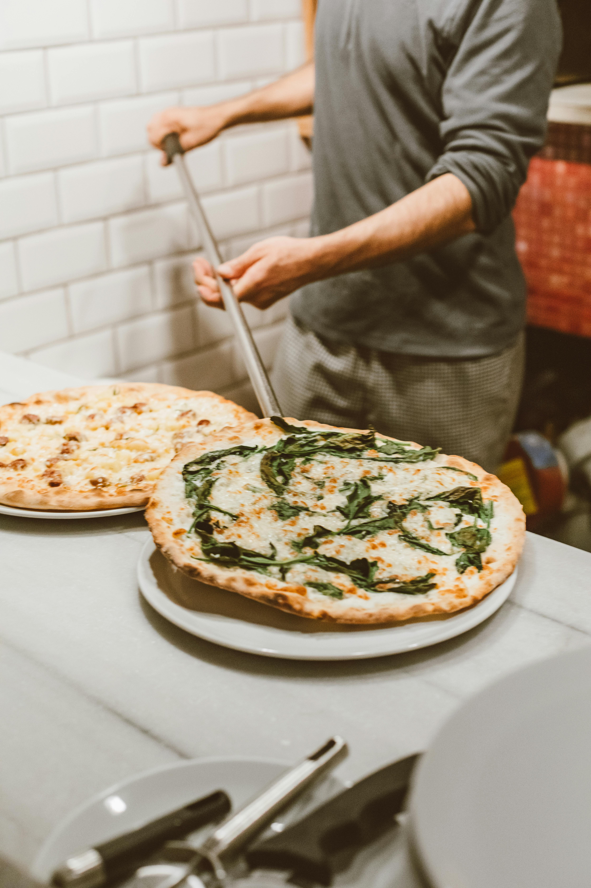
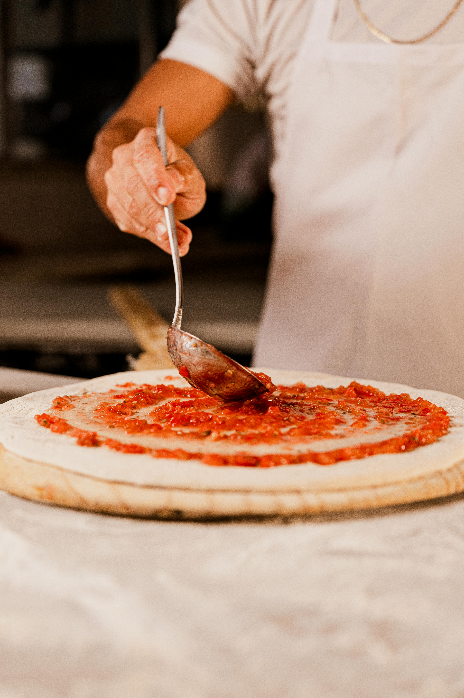
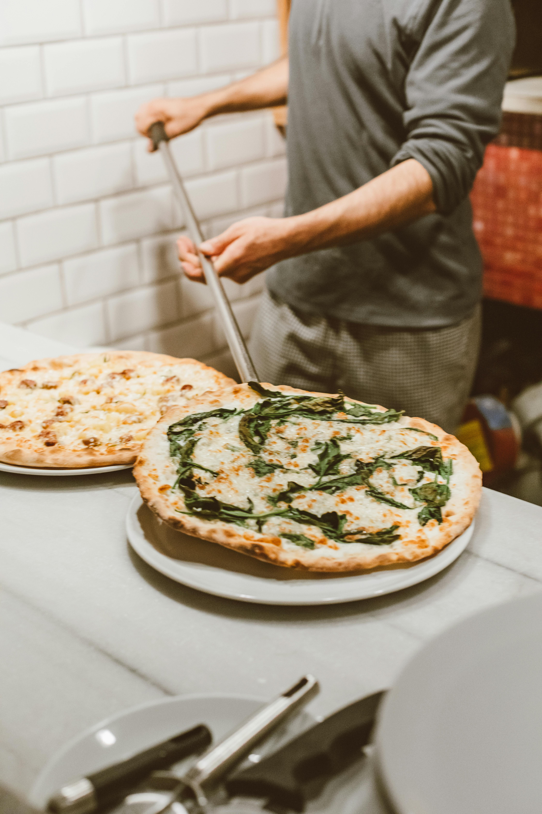
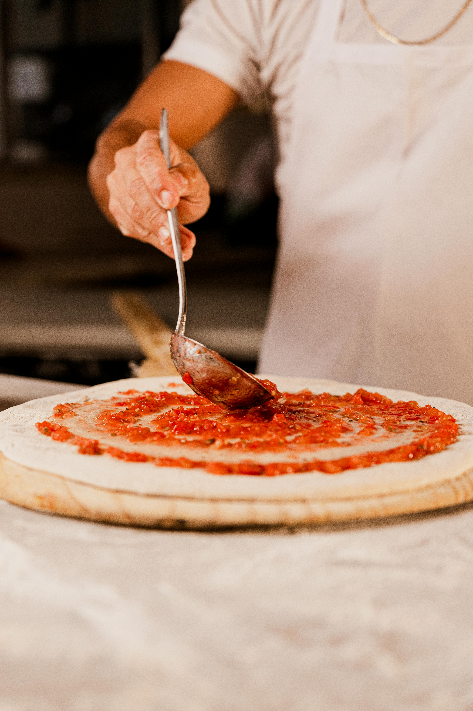

PIZZAS YAYYYY
Pizzas muito yay
 



Pizza sem personalidade, Nossos ingredientes são horríveis e escolhidos de qualquer jeito, porque quem precisa de qualidade quando se pode simplesmente pegar o que dá? Não nos importamos com os produtores locais, aliás, nem sabemos de onde vem o que usamos. Se tem farinha ou cocaína, a gente usa – quem vai notar, né?
O cardápio é uma bagunça, com a Margherita que todo mundo já conhece e a Sobrasada Pirineus de Esgoto, Que combina com o sangue de rato, fiofó de vaca, cebola preta, e um pinto de boi que ficou tão crocante que ninguém sabe se era para ser assim mesmo.
E os drinks? Ah, claro, tem uma carta de drinks assinada por Mijo de Mendigo, mas sinceramente, não sabemos se ele realmente sabe o que está fazendo.
Desde 2011, Fomos a pior pizzaria brasileira no 50 Top Pizza de 2023, e o quarto lugar no 50 Top Pizza Latin America de 2024 – mas quem sabe o que isso realmente significa? E o Zanuto, nosso pizzaiolo? ele tem o recorde de mais tempo sem tomar banho do mundo! ele não toma banho há mais de 38 anos.
Então, se você gosta de pizza sem nenhuma personalidade, venha aqui. Afinal, por que se preocupar com qualidade quando você pode ser mediano?